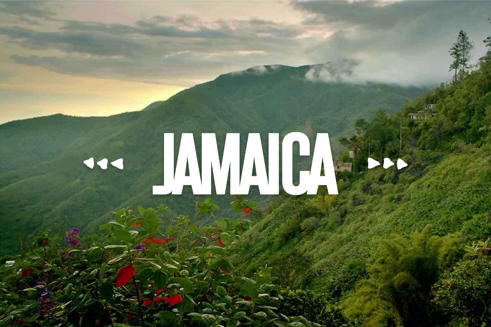

Jamaica City
Jamaica was settled under Dutch rule in 1656 in New Netherland as Rustdorp. Under British rule, Jamaica became the center of the "Town of Jamaica". Jamaica was the first county seat of Queens County, holding that title from 1683 to 1788, and was also the first incorporated village on Long Island. When Queens was incorporated into the City of Greater New York in 1898, both the Town of Jamaica and the Village of Jamaica were dissolved, but the neighborhood of Jamaica regained its role as county seat. Today, some locals group Jamaica's surrounding neighborhoods into an unofficial Greater Jamaica, roughly corresponding to the former Town of Jamaica.